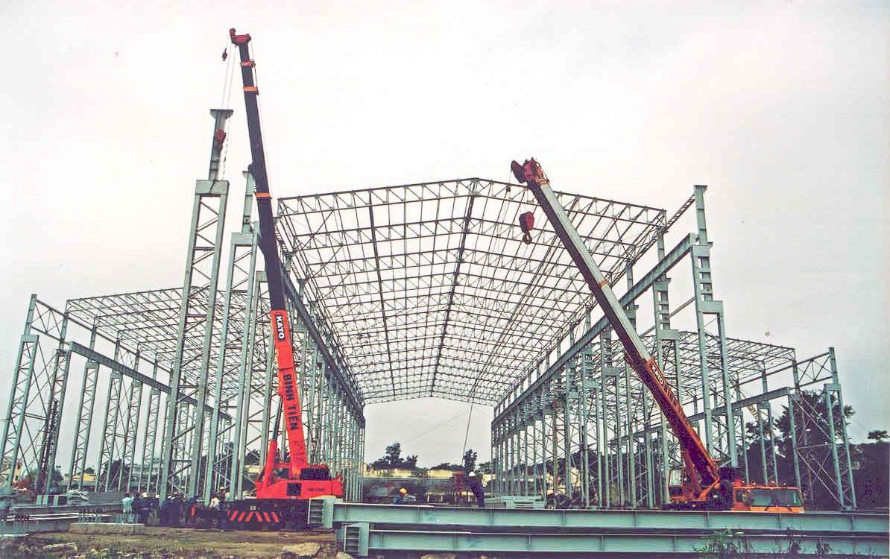

12/06/2019 15:22

Tên ngành: Công nghệ kỹ thuật công trình xây dựng dân dụng và công nghiệp
Mã ngành: 7510102
Thời gian học tập: 4,5 năm
Bằng tốt nghiệp: Kỹ sư Công nghệ kỹ thuật công trình xây dựng
1. NGÀNH CNKT XÂY DỰNG DÂN DỤNG VÀ CÔNG NGHIỆP LÀ GÌ?
Trong giai đoạn phát triển của đất nước hiện nay và tương lai sắp tới, lĩnh vực xây dựng dân dụng và công nghiệp được coi là một trong những mũi nhọn của sự phát triển kinh kế. Ngành Công nghệ kỹ thuật (CNKT) Xây dựng dân dụng và công nghiệp là ngành đào tạo ra các kỹ sư xây dựng, phục vụ cho công tác thiết kế, thi công xây dựng các công trình nhà phục vụ dân dụng và công nghiệp như các loại nhà ở, khu đô thị; các loại chung cư và nhà văn phòng cao tầng; các loại công trình công cộng như sân vận động, triển lãm nghệ thuật; các công trình văn hóa như đình, chùa; các công trình phục vụ giao thông như nhà ga, bến xe; các công trình phục vụ sản xuất như nhà xưởng, kho bãi. Các kỹ sư xây dựng tốt nghiệp ngành CNKT Công trình Xây dựng dân dụng và công nghiệp có khả năng tham gia vào toàn bộ quy trình dự án, từ thiết kế đến thi công, quản lý dự án đến khai thác bảo trì công trình. Có khả năng ứng dụng các quy trình tiên tiến như BIM vào thiết kế, nắm được các công nghệ thiết kế và thi công tiên tiến mới nhất hiện nay.
2. CHƯƠNG TRÌNH ĐÀO TẠO NGÀNH CNKT CÔNG TRÌNH XÂY DỰNG DÂN DỤNG VÀ CÔNG NGHIỆP TẠI UTT
Chương trình đào tạo ngành CNKT Công trình Xây dựng dân dụng và công nghiệp cung cấp cho sinh viên kỹ năng thiết kế các hạng mục của công trình xây dựng, kỹ năng điều hành thi công và tổ chức thi công công trình từ đầu đến khi hoàn thiện bàn giao. Kỹ năng sử dụng các công nghệ tiên tiến trong thiết kế, tổ chức thi công. Chương trình đào tạo được thiết kế theo định hướng ứng dụng, thực học, thực nghiệp với tỷ lệ thực hành lên đến 40%, giúp trau dồi đào tạo kỹ năng cho sinh viên, nhằm mục đích trở thành kỹ sư thực hành khi ra trường.
3. HỌC NGÀNH CNKT XÂY DỰNG DÂN DỤNG VÀ CÔNG NGHIỆP RA LÀM GÌ?
- Kỹ sư điều hành, giám sát thi công, thí nghiệm kiểm định chất lượng công trình dân dụng và công nghiệp;
- Kỹ sư tư vấn tại các đơn vị tư vấn, thiết kế, giám sát tại các doanh nghiệp xây dựng;
- Kỹ sư quản lý dự án tại các Ban quản lý dự án đầu tư xây dựng công trình dân dụng và công nghiệp; Nhân viên quản lý nhà nước về công trình dân dụng và công nghiệp;
- Làm việc trong các Viện nghiên cứu, cơ sở giáo dục đào tạo, hướng nghiệp dạy nghề.
4. MỨC LƯƠNG NGÀNH XÂY DỰNG DÂN DỤNG VÀ CÔNG NGHIỆP?
Ngành Xây dựng có mức lương cạnh tranh, tùy thuộc vào vị trí công tác và năng lực chuyên môn. Mức lương phổ biến của ngành dao động trong khoảng 15 đến 20 triệu.